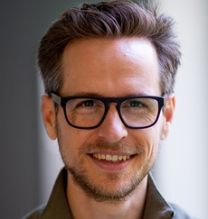
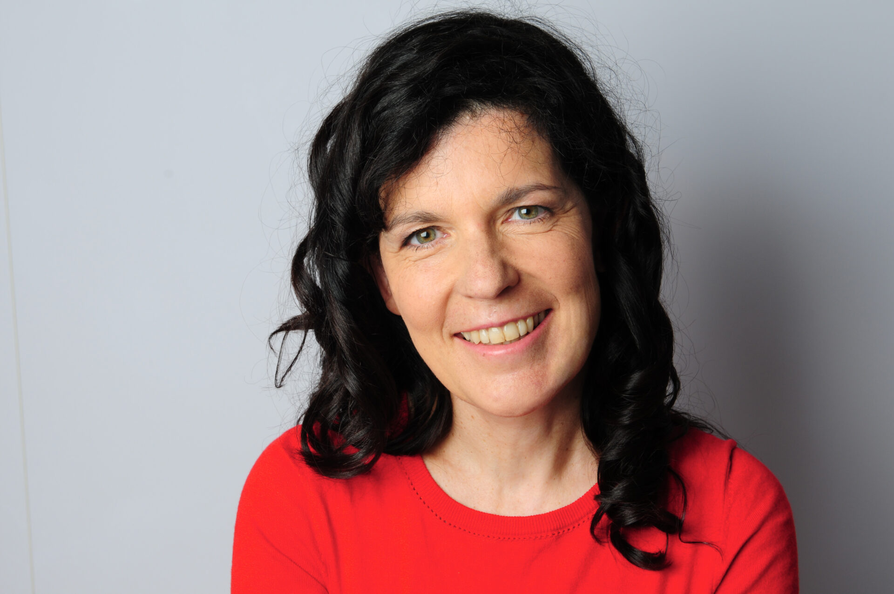
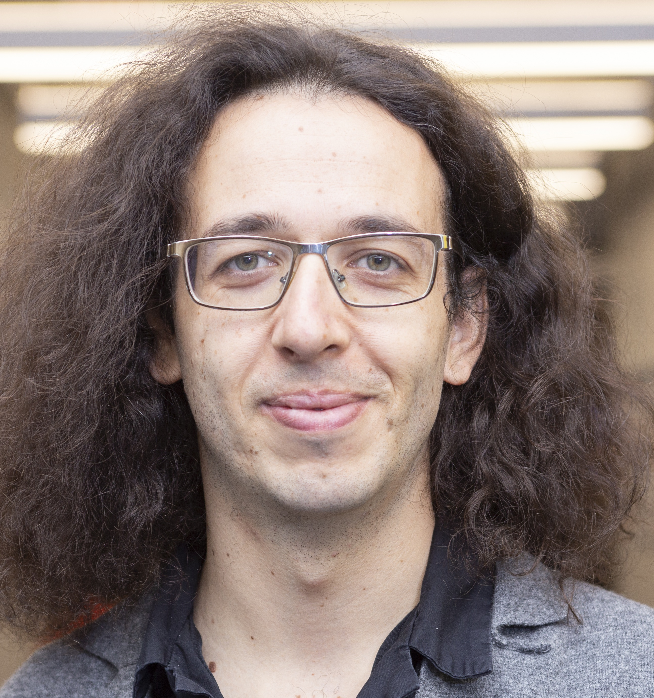
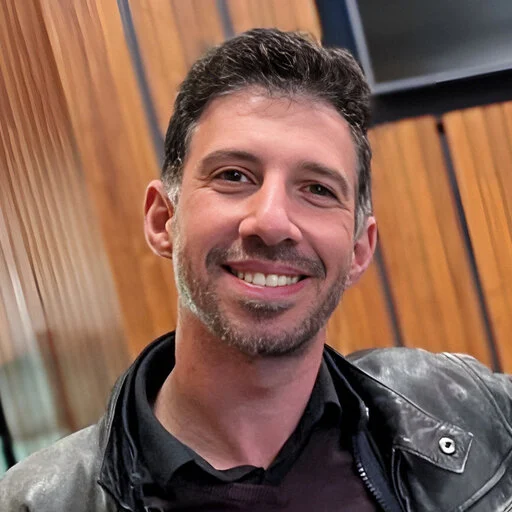

MP
Monica Perusquía-Hernández
Nara Institute of Science and Technology, Japan
Affective and physiological computing, embodiment, and human-AI interaction, with a focus on wearable sensing and AI-mediated communication.
Humans remain embodied while AI becomes increasingly disembodied. We bring together researchers from HCI, affective and physiological computing, embodied cognition, neuroscience, and AI to ask what is lost without embodiment, and how intelligence and embodiment might be re-coupled.
For decades, human-computer interaction has been driven by three complementary forces. Large Language Models accelerate two of them while stepping back from the third.
Technology augments memory, reasoning, creativity, and decision making.
LLMs accelerate thisInterfaces move closer to perception, action, physiology, and emotion.
LLMs step back from thisComputers turn from external tools into continuous partners in everyday life.
LLMs accelerate thisWhereas wearables enabled embodied interaction and made physiological signals accessible, today's LLMs have largely retreated to disembodied interfaces. Interacting with disembodied systems is not new in itself. What is new is that these systems now take part in communication, learning, emotional support, and decision making in ways that appear almost human-like, while having no body and only limited access to the Umwelt that grounds human experience.
The resulting decoupling of intelligence from embodiment raises fundamental questions about cognition, emotion, empathy, trust, agency, and human-AI interaction. It is no longer a theoretical concern but a daily experience for millions of users. Two developments could close that gap: AI systems could gain embodied access to the world, and human-facing interfaces could move onto the body. The two are not interchangeable, since giving a system its own senses and putting the interface on the body raise different questions about grounding, privacy, and control. This workshop aims to establish an interdisciplinary research agenda that defines the theoretical foundations, design principles, and technological opportunities for embodied interaction in the age of disembodied intelligence.
The workshop's questions fall into two parts: what is lost when intelligence is decoupled from embodiment, and how embodiment might be reintroduced along two strands that are not interchangeable.
What is lost without embodiment?
AI gains embodied access
Human-AI interfaces move onto the body
This workshop is currently a proposal. The call below will open if the workshop is accepted.
We invite researchers and practitioners working with and designing for human-AI interaction to join a workshop of two consecutive 90-minute sessions. We welcome participants from HCI, affective, wearable, and physiological computing, robotics, embodied cognition, psychology, neuroscience, and AI.
Two-page extended abstracts that present a project or articulate a challenge related to this call, stating explicitly how it relates to the core concepts and open questions above. Previously published papers summarized as extended abstracts are also welcome.
Submissions use the CEUR Workshop Proceedings template, must follow the ACM accessibility and AI usage guidelines, and are submitted via EasyChair. Submissions are selected on the quality and contribution of the work relating to the workshop themes, with a particular focus on novel interaction paradigms with AI. Abstracts with complementary relevance will be invited for lightning talks.
All abstracts will be summarized by the organizers, made available on this website, and published as proceedings on CEUR-WS.org.
At least one author of each accepted submission must register for the workshop and the CHI 2027 conference and attend the workshop in person.
| Session 1 | |
|---|---|
| 5 min | IntroductionOrganizers, goals, methods, and post-workshop activities. |
| 5 min | Embodied warm-upA movement exercise inspired by contact improvisation, in which participants experience how a sense of agency can transfer between collaborating agents in a symbiotic coupling. |
| 50 min | Mapping the landscapeLightning talks on selected submissions, 3 minutes each with 2 minutes of questions, establishing where the state of the art stands and where it is heading. |
| 5 min | Landscape theme aggregationThe organizers present a thematic analysis of the lightning talks, prepared in advance from the submissions. |
| 25 min | Grand Challenge WallParticipants propose grand challenges, which are grouped into "Future Headlines of Embodied Human-AI Interaction (2037)" on post-its or a shared digital board. |
| Session 2 | |
| 30 min | Designing the future agendaBreakout groups form around the most popular headlines from session 1 and develop moonshot proposals for hypothetical projects. |
| 25 min | Presentation of moonshot proposalsEach group shares its proposal. |
| 5 min | Break |
| 30 min | Closing fishbowlA small inner circle discusses one broad question while the others observe, and any participant can swap in by tapping someone on the shoulder. The question: what should this field prioritize in the next decade to optimize embodied throughput and communication between people and their AIs? |
The workshop runs as two consecutive 90-minute sessions, in person, and is planned for about 20 participants. With more attendees, we will add digital participation and voting tools to gather and summarize contributions in real time. Session times will be announced once the schedule is confirmed.
We will publish a summary of guidelines and future directions on this website as living documentation of the outcomes, together with the hardware, software, and reading resources contributed by participants. These will form the basis of a joint publication by organizers and participants, to which all participants are invited as co-authors, including a taxonomy of embodied-disembodied interaction levels and a position paper (e.g., in Communications of the ACM). We further plan a special issue proposal (e.g., in TOCHI) on new embodied interaction paradigms with AI, possibly a Shonan or Dagstuhl meeting, and follow-up workshops at SIGCHI conferences. A Slack or Discord workspace will keep the discussion going and support collaborations between participants.
Nara Institute of Science and Technology, Japan
Affective and physiological computing, embodiment, and human-AI interaction, with a focus on wearable sensing and AI-mediated communication.

Karlsruhe Institute of Technology, Germany, and University of Nottingham, UK
Wearable neurotechnology and physiological computing, investigating the demands of digitally mediated knowledge work, such as workload and fatigue, and its positive experiences, such as flow and engagement.

University of Augsburg, Germany
Human-centered AI, affective computing, and intelligent user interfaces, with a focus on embodied conversational agents and social signal processing.
KTH Royal Institute of Technology, Sweden
Intercorporeal Design: eliciting embodied social interaction through technology, and how embodied relations emerge between people and artificial agents. Spans XR, biosignals, soft robotics, and embodied AI.
LMU Munich, Germany
Human augmentation: technologies that extend cognitive, motor, and sensory capabilities, and their effects on cognition, behavior, and experience.

University of Chicago, United States
Interfaces that operate through the body, combining haptics, wearables, and immersive systems to study and augment movement, perception, and agency.
Google, United States
Immersive technologies and avatar embodiment, studying how virtual bodies shape perception, behavior, and the sense of self.
LMU Munich, Germany
How digital technologies amplify human cognition and perception, spanning human-centered AI, ubiquitous computing, AR/VR, and physiological sensing.

Centrum Wiskunde & Informatica and Utrecht University, Netherlands
Affective interactive systems and trustworthy human-AI interaction, with a focus on human augmentation, AI self-extension, and AI transparency.
Accepted papers will be listed here after the notification date, and available to read two weeks before the workshop.
For questions about the workshop or submissions, write to perusquia@ieee.org.